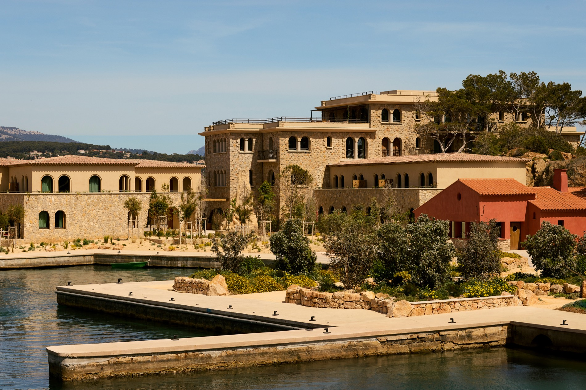
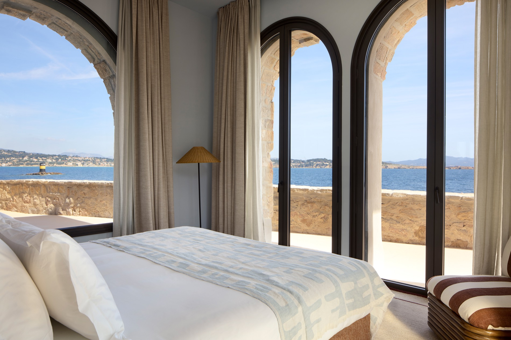
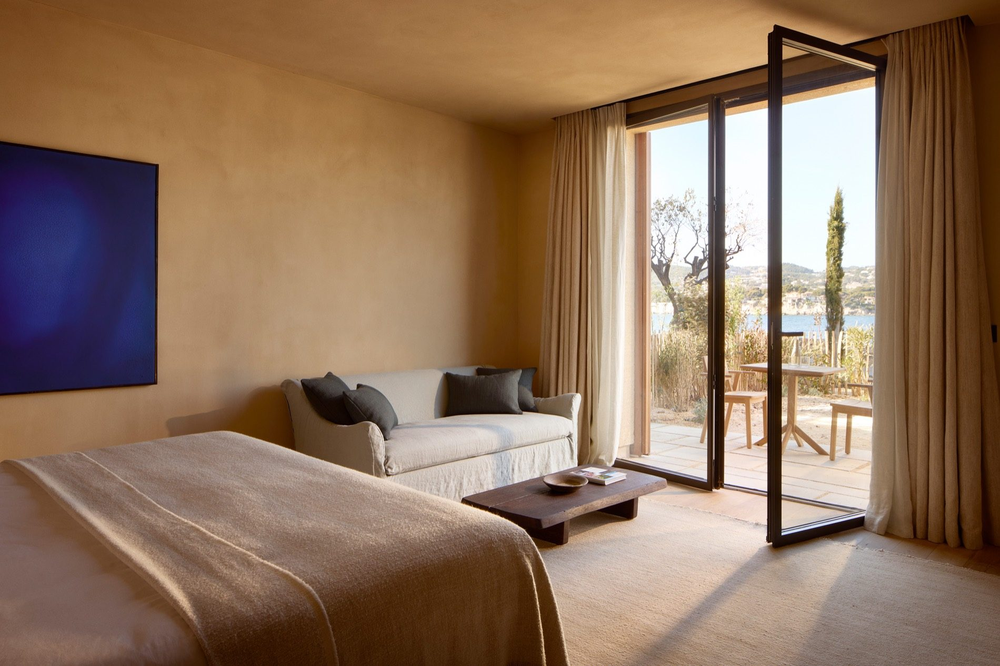
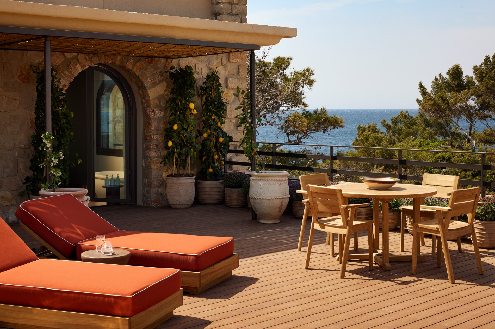
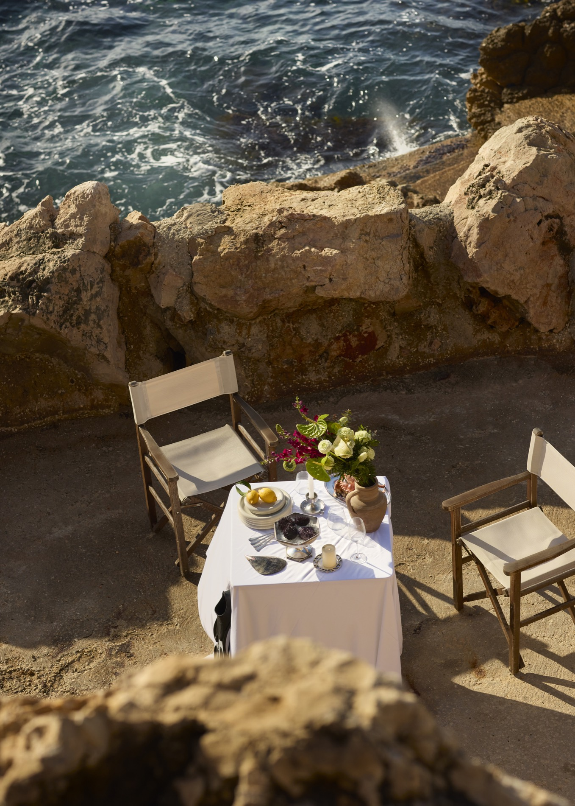
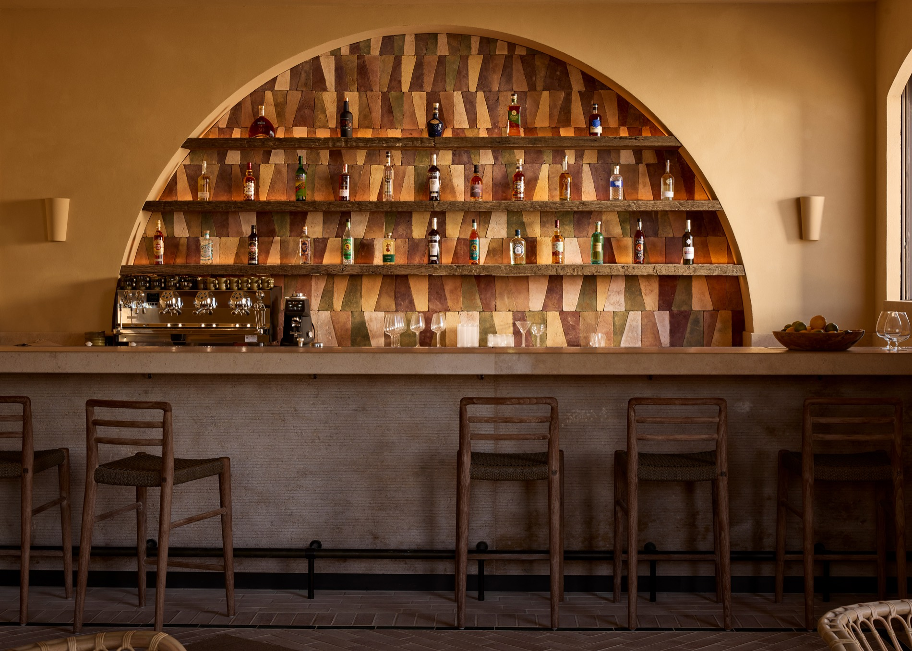
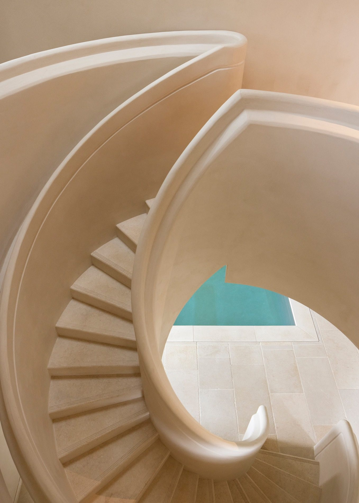
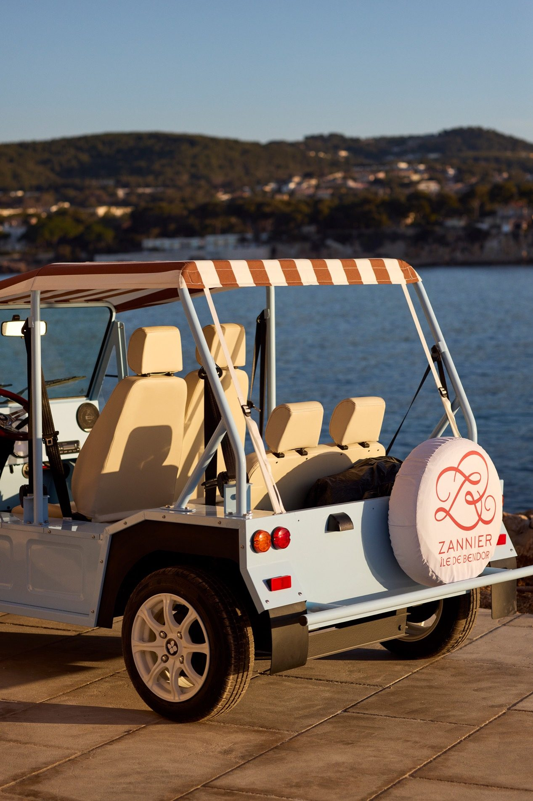

A private island off Bandol, once Paul Ricard's personal retreat, now reimagined by Zannier Hotels.
Inquire to BookJust off the coast of Bandol on the French Riviera sits a tiny private island with an outsized history. Île de Bendor was once the personal retreat of pastis magnate Paul Ricard, who spent decades filling it with gardens, art, and a distinctly southern-French sense of leisure.
Zannier Hotels has now reimagined the entire island as a one-of-a-kind resort — honey-stone villages, a working harbor, a spa built into the rock, and some of the best sunset views on the Côte d'Azur. The island unfolds across two garden villages, Delos and Soukana, each with its own pool and its own personality, connected by footpaths and electric buggies.
Inquire About Availability →
Three rooms worth knowing before you book

Arched windows open straight onto the sea in the Delos village — the pick for couples who want to wake up to water on both sides.

Warmer and more residential, with a private terrace tucked into the Soukana gardens — quieter, and closer to the island's pine groves.

The island's most private terrace, with its own dining table, sun loungers, and an outdoor soaking tub under the lemon trees.
Dining, wellness, and getting around without a single car

Cliffside tables at Le Grand Large for sunset, and a striped, yacht-club dining room at La Table Delos for everything else.

A hand-tiled bar built for a slow pastis at golden hour — the island's answer to a proper apéro.

A spiral stone staircase drops straight into a plunge pool, with a second courtyard pool, treatment rooms, and a tea room above.

Electric "Mini Kate" buggies shuttle guests between villages, the harbor, and the pools — there are no cars on the island.
Specific perks for Zannier Île de Bendor
Send me a message and I'll take it from there — dates, room type, and everything in between.
Get In Touch